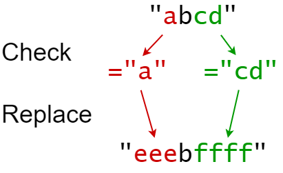
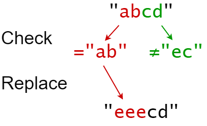

833. 字符串中的查找与替换
替换同时发生 → 每条都对着原 s 判定：先记下「每个位置该应用哪条替换」，再一趟扫描拼接（命中写 target、跳原段长）。
思路
- 关键：所有替换同时作用在原
s上，所以每条替换都用原s判定sources[i]是否出现在indices[i]处（s.startsWith(src, idx)），互不影响。 match[pos]记录该位置要应用的替换编号（-1 表示原样），一条替换只占它自己的起点。- 扫描拼接：有标记就写
targets[m]并把pos跳过sources[m].length()（跳的是原段长度），没标记就原样抄一个字符。
图解
最优解
1import java.util.*;2 3class Solution {4 public String findReplaceString(String s, int[] indices, String[] sources, String[] targets) {5 int n = s.length();6 int[] match = new int[n]; // match[pos] = 该位置要应用的替换编号，-1 表示原样保留7 Arrays.fill(match, -1);8 for (int i = 0; i < indices.length; i++) {9 int idx = indices[i];10 // 都对原 s 判断：替换同时发生，互不影响11 if (s.startsWith(sources[i], idx)) match[idx] = i;12 }13 StringBuilder sb = new StringBuilder();14 for (int pos = 0; pos < n; ) {15 int m = match[pos];16 if (m < 0) { sb.append(s.charAt(pos++)); continue; }17 sb.append(targets[m]); // 命中：整段写成 target18 pos += sources[m].length(); // 跳过的是原段的长度19 }20 return sb.toString();21 }22}题目
你会得到一个字符串 s (索引从 0 开始)，你必须对它执行 k 个替换操作。替换操作以三个长度均为 k 的并行数组给出：indices, sources, targets。
要完成第 i 个替换操作:
- 检查 子字符串
sources[i]是否出现在 原字符串s的索引indices[i]处。 - 如果没有出现， 什么也不做 。
- 如果出现，则用
targets[i]替换 该子字符串。
例如，如果 s = "abcd" ， indices[i] = 0 , sources[i] = "ab"， targets[i] = "eee" ，那么替换的结果将是 "eeecd" 。
所有替换操作必须 同时 发生，这意味着替换操作不应该影响彼此的索引。测试用例保证元素间不会重叠 。
- 例如，一个
s = "abc"，indices = [0,1]，sources = ["ab"，"bc"]的测试用例将不会生成，因为"ab"和"bc"替换重叠。
在对 s 执行所有替换操作后返回 结果字符串 。
子字符串 是字符串中连续的字符序列。
示例 1：

输入：s = "abcd", indices = [0,2], sources = ["a","cd"], targets = ["eee","ffff"] 输出："eeebffff" 解释： "a" 从 s 中的索引 0 开始，所以它被替换为 "eee"。 "cd" 从 s 中的索引 2 开始，所以它被替换为 "ffff"。
示例 2：

输入：s = "abcd", indices = [0,2], sources = ["ab","ec"], targets = ["eee","ffff"] 输出："eeecd" 解释： "ab" 从 s 中的索引 0 开始，所以它被替换为 "eee"。 "ec" 没有从原始的 S 中的索引 2 开始，所以它没有被替换。
提示：
1 <= s.length <= 1000k == indices.length == sources.length == targets.length1 <= k <= 1000 <= indices[i] < s.length1 <= sources[i].length, targets[i].length <= 50s仅由小写英文字母组成sources[i]和targets[i]仅由小写英文字母组成
题面取自力扣当前版本。
数据快照 2026-11-04。题面版权归力扣所有，本站点仅供本人学习使用，请勿对外发布。